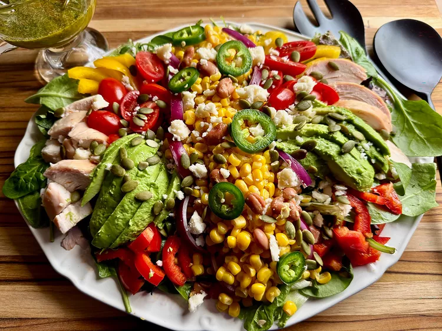

Southwest Chicken Power Salad

Description
This Southwest chicken power salad is not your average green salad. Packed with chicken, beans, corn, and hearty vegetables, and dressed with a delicious cilantro vinaigrette, this high-protein salad will keep you satisfied for hours.
Ingredients
Vinaigrette
- 1/2 cup chopped fresh cilantro
- 1/4 cup good quality olive oil
- 2 tablespoons freshly squeezed lime juice
- 1 teaspoon honey or agave syrup, or to taste
- 1 teaspoon chopped fresh garlic
- 1/2 teaspoon ground cumin
- 1/4 teaspoon cayenne pepper (optional)
- 2 tablespoons Mexican crema or sour cream (optional)
- Salt and freshly ground black pepper to taste
Salad
- 1 (5-ounce) container mixed salad greens
- 1 cup diced cooked chicken
- 1 (15-ounce) can pinto beans, rinsed and drained
- 1 (15-ounce) can whole kernel corn, drained
- 1/2 yellow bell pepper, seeded and diced
- 1/2 red bell pepper, seeded and diced
- 1/2 cup halved cherry tomatoes
- 1/2 cup crumbled Cotija cheese
- 1 avocado - peeled, pitted, and sliced
- 4 thin slices red onion, or to taste
- 1 jalapeño, sliced, or to taste (optional)
- 2 tablespoons raw pumpkin seeds (optional)
Steps
- Place cilantro, olive oil, lime juice, honey, garlic, cumin and cayenne in the bowl of a blender or mini food processor and pulse several times until blended. For a creamy dessing, include the optiona Mexican crema.
Season to taste with salt and pepper
- For salad, line a serving plate with mixed salad greens. Arrange chicken, pinto beans, corn, yellow bell pepper, cherry tomatoes, cotija, avocado, and red onion in a pleasing design on top of greens.
- Drizzle with vinaigrette (alternatively, place all ingredients in a large salad bowl and toss with vinaigrette). Garnish with pumpkin seeds and jalapeño slices.
Home